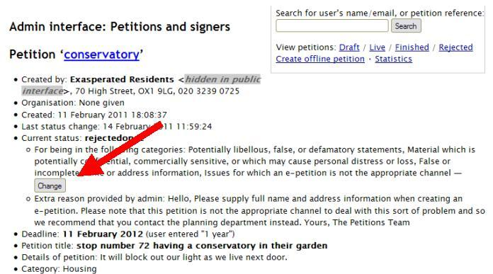
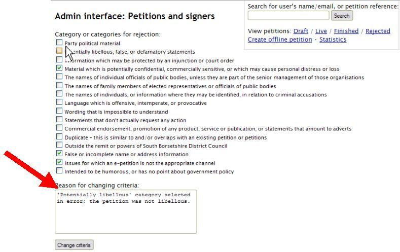

To change the category under which a petition was rejected, after a petition has been rejected
If you realise that the wrong category was selected during the rejection process, then it is possible to change this on the admin page for that petition. You can change the category for any rejected petition – whether it has been rejected once or twice.
You will find all rejected petitions under the ‘Rejected’ section of the admin interface. Click the ‘admin’ link for the petition in question, then on the admin interface page, simply click the ‘Change’ button by the current rejection category/ies:
This will take you through to a page which will allow you to select new categories, and deselect existing ones, as you wish. You must give a reason why these changes are being made:
Finally, click the ‘Change criteria’ button.
If the petition is shown on the public website under rejected petitions then the category/ies for rejection will update with the new details; however, the petition creator will not be emailed to alert them that this has happened.